围绕亮马河周边文旅、商业与城市空间如何融合，生态价值如何转化为发展价值展开观察。调研时间为2026年6月4日日景，夜景材料补充自2025年10月1日。
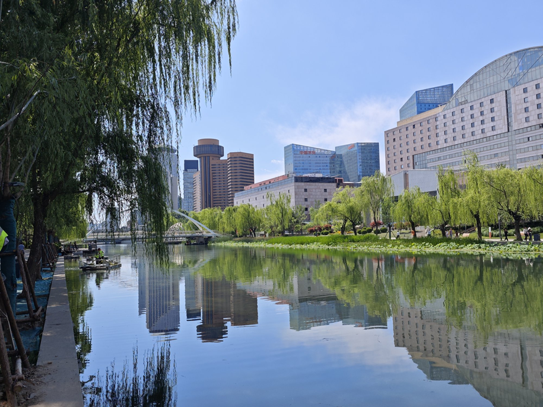
本组聚焦两个问题：亮马河周边文旅、商业与城市空间如何融合？生态治理带来的环境改善，怎样进一步形成发展价值？
调研路线以亮马桥、燕莎为入口，沿滨水步道向蓝色港湾方向展开。观察重点包括河道与绿化是否可感知、公共空间是否可进入、码头和游船是否形成产品、临水商业与夜景是否形成消费场景、导视系统是否支撑“国际风情水岸”品牌。
现场可见，亮马河国际风情水岸已不只是河道整治或景观工程。它把河道、步道、码头、商铺、灯光和商圈入口放在同一个水岸场景中，形成了比较完整的文商旅融合链条。
河道更新带来清水绿岸和可感知的环境改善
步道、广场、亲水平台让市民能够进入和停留
游船、皮划艇、家庭休闲船形成可参与的水上体验
燕莎、亮马桥站和蓝色港湾共同承接客流与消费
治理后的河道呈现清水绿岸、乔木与水生植物相映的景象，水面可以倒映天空和建筑。生态价值首先表现为看得见、走得到、愿意停留的环境资产。
在此基础上，滨水台阶、慢行广场、木质栈道和亲水平台串联起连续慢行系统。友谊广场由停车场改造为“滨水会客厅”，与燕莎友谊商城相邻，说明公共空间更新已经和文化、商业活动发生联系。
燕莎码头有清晰标识和候船服务设施，游船、皮划艇、脚踏船、家庭休闲船等水上活动较为集中。沿河码头还设置中英文价目表，说明河道体验已经形成明码标价的文旅消费项目。
商业方面，地铁亮马桥站与燕莎友谊商城构成客流入口；蓝色港湾段餐饮、外摆和品牌商铺集聚，滨水环境成为商业停留和步行消费的空间条件。
夜景记录显示，滨水建筑灯光、树灯与水面倒影交织，户外餐区仍有客流。夜间的“亮马河”中英文发光标识强化了目的地识别，支撑“国际风情水岸”的城市形象。
燕莎商圈公共通道电子屏滚动播放亮马河建设宣传，直接出现“绿水青山就是金山银山”“以水为媒，文旅融合”等表述，把生态治理、城市更新与文旅消费联系起来。
后续可以继续关注高峰时段步道与码头客流疏导，加强生态治理历程的科普标识，平衡商业开发强度与亲水空间开放性，并优化夜间照明的节能与光污染控制。
这些问题不影响亮马河整体更新成效，但会影响市民和游客的长期体验。文商旅融合不能只看热闹程度，也要看公共空间是否持续好用。
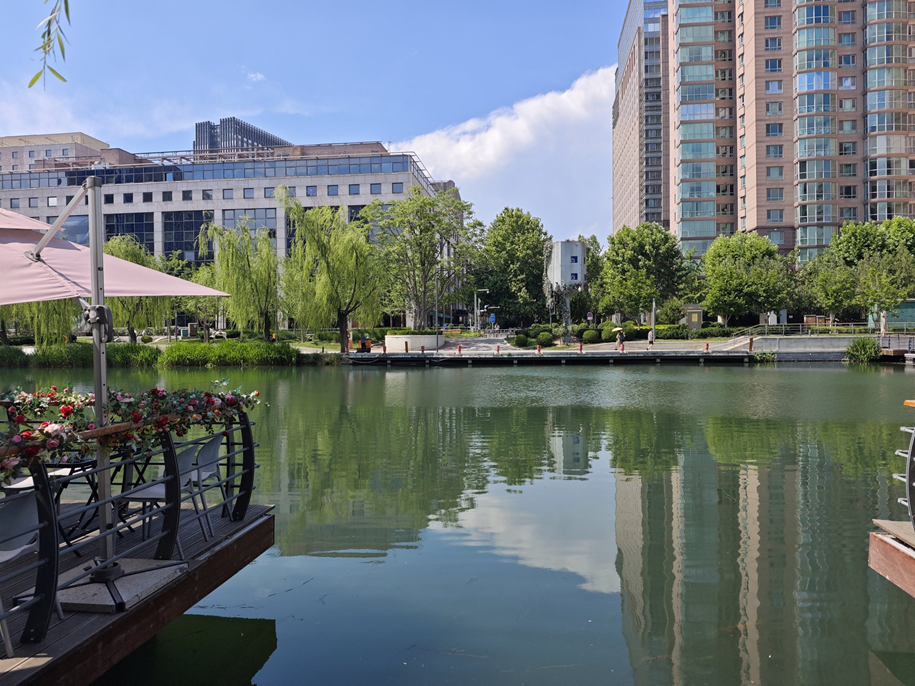
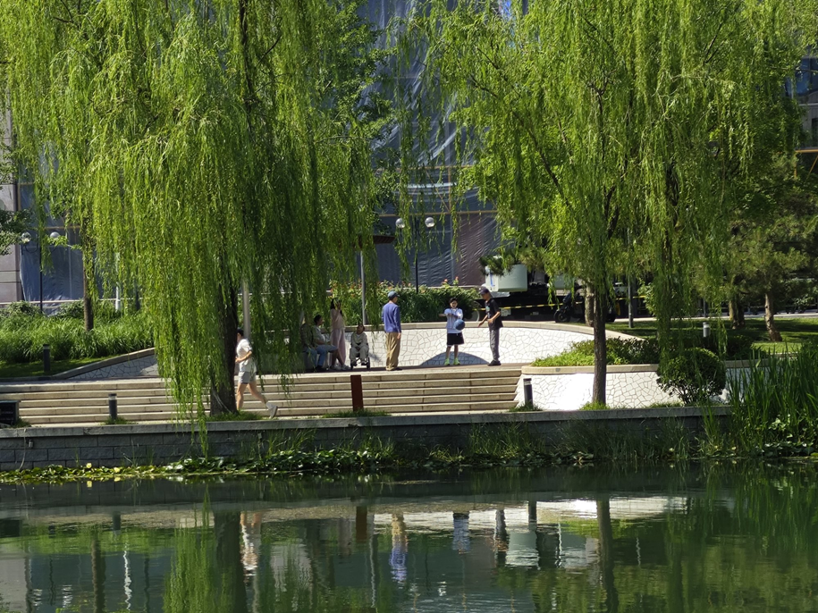
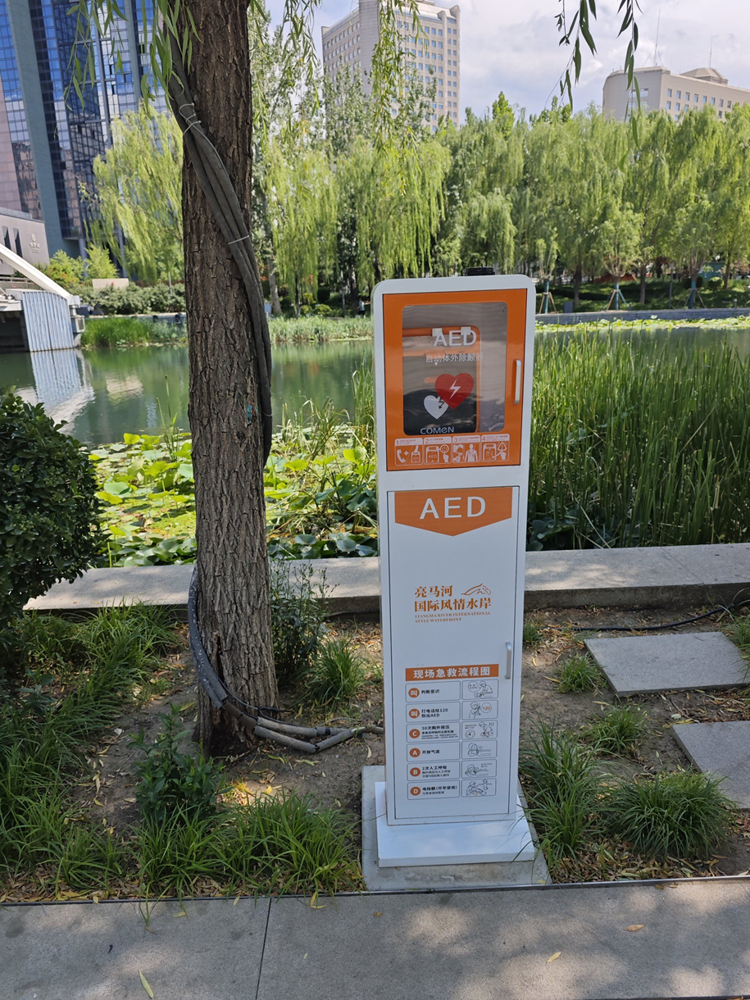
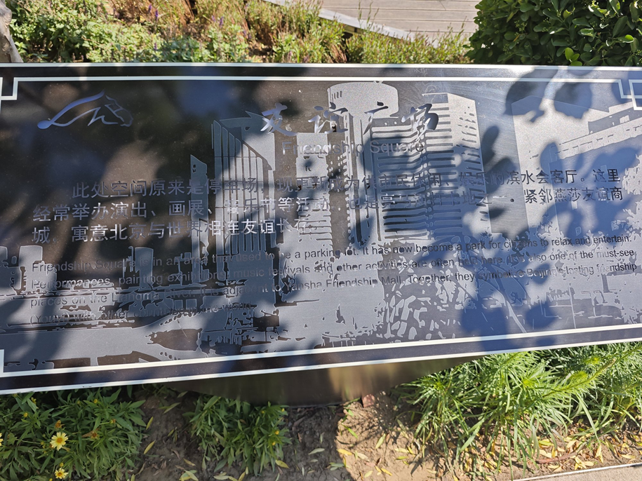
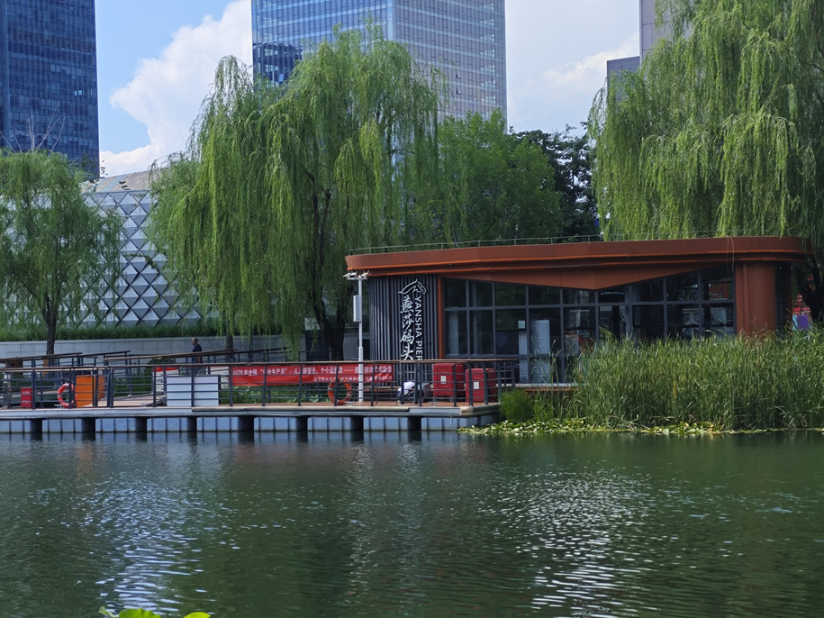
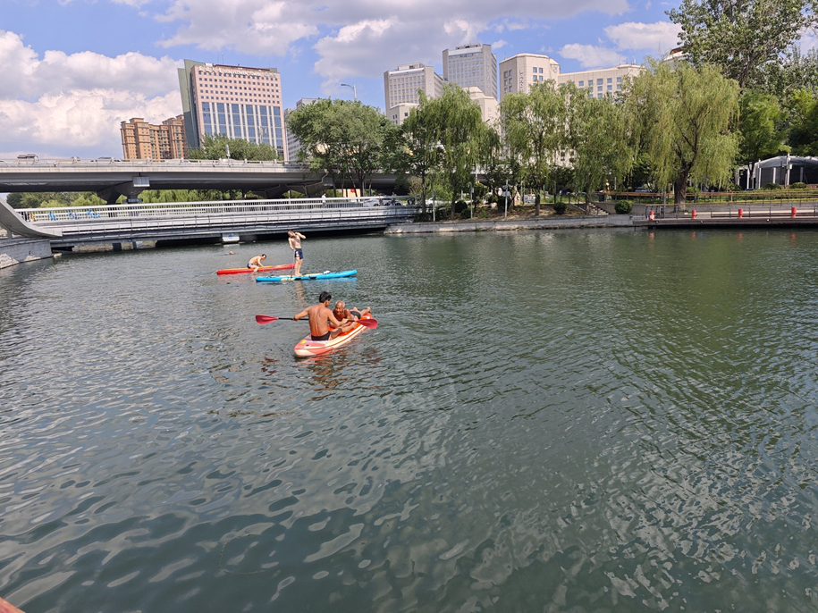
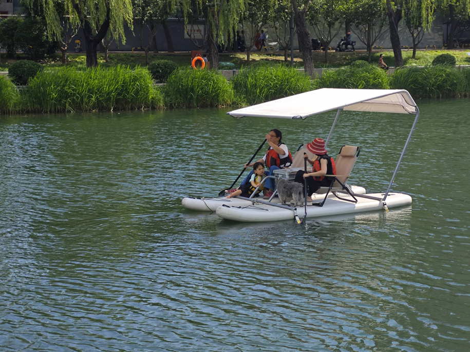
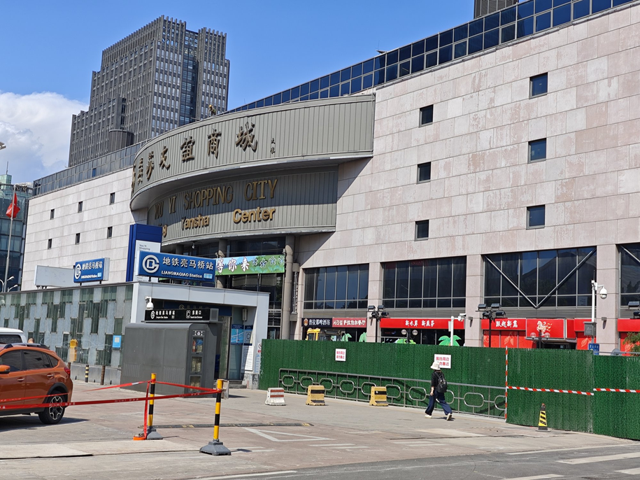
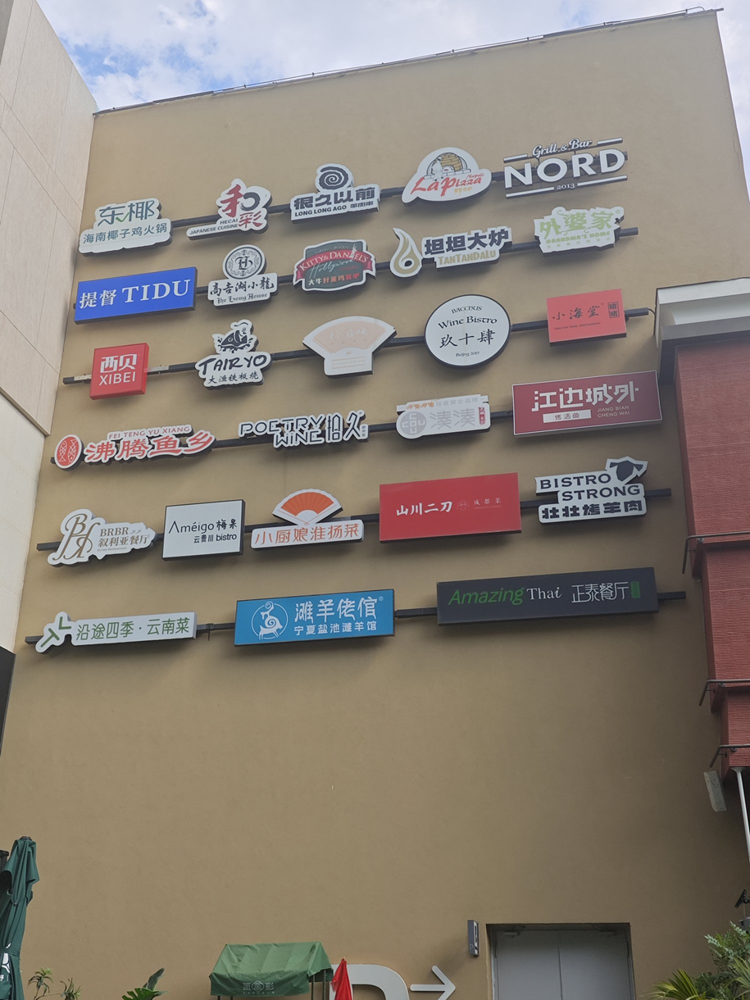
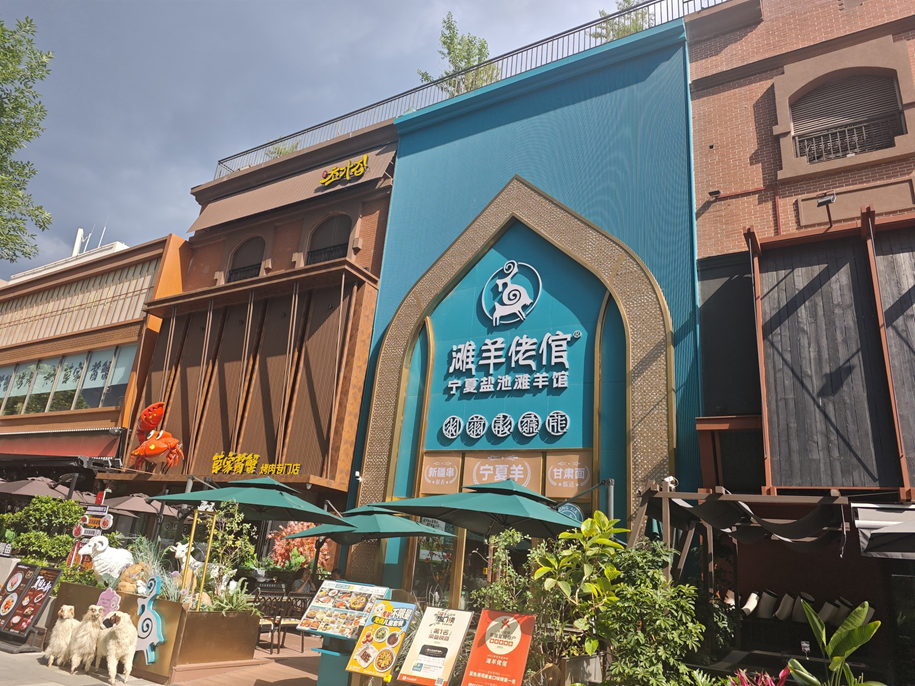
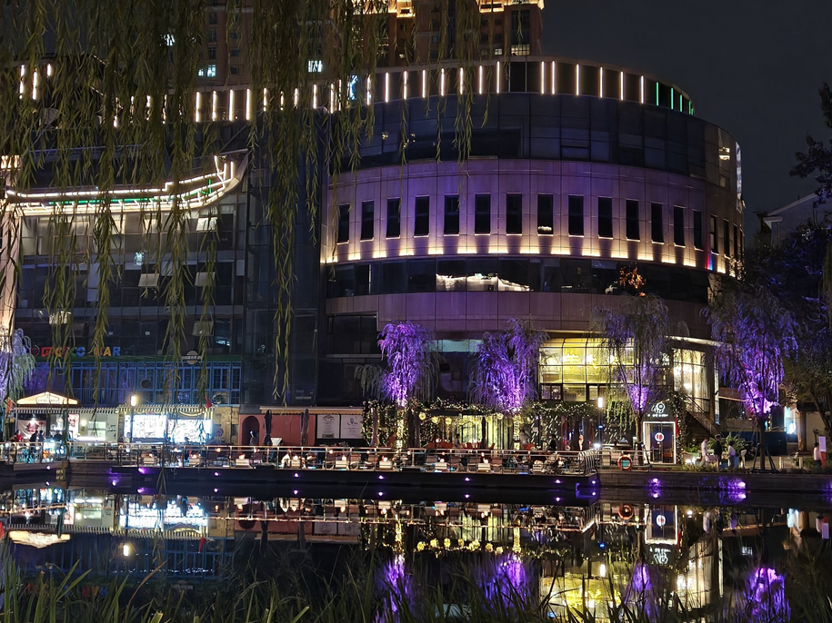
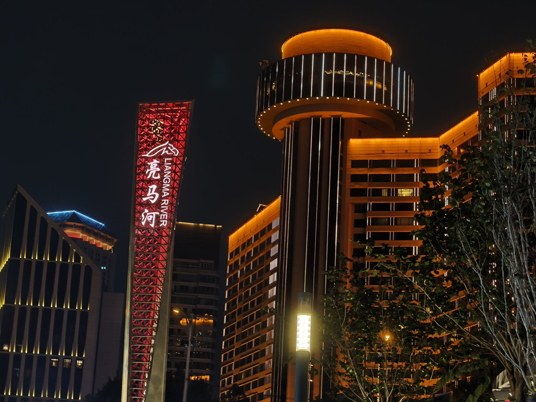
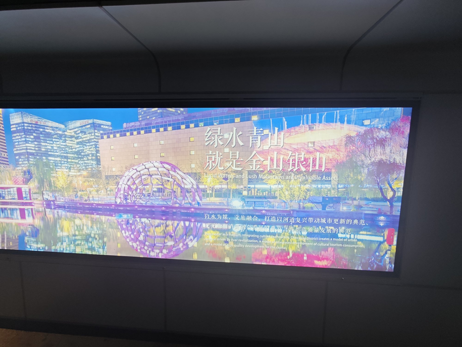
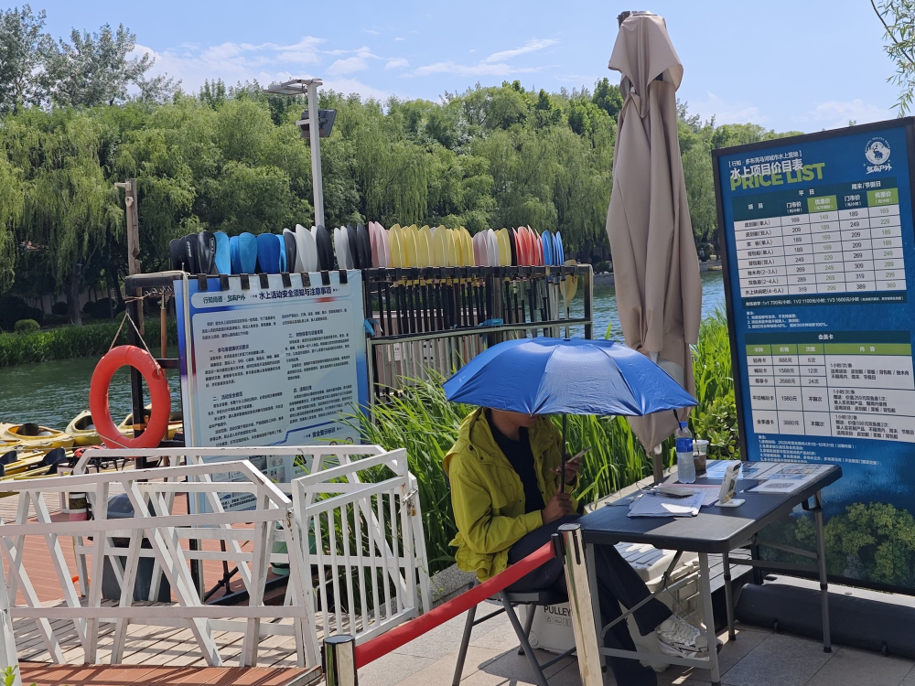
通过实地走访与影像记录，我们认识到生态文明建设在亮马河并不是抽象口号，而是落在水质、步道、码头、商铺、灯光这些具体要素上。河道治理提供了环境基础，公共空间让人愿意靠近，文旅和商业活动又把这种环境改善转化为更稳定的人流与消费。亮马河的案例说明，生态建设和城市发展可以在同一片水岸空间里相互支撑。